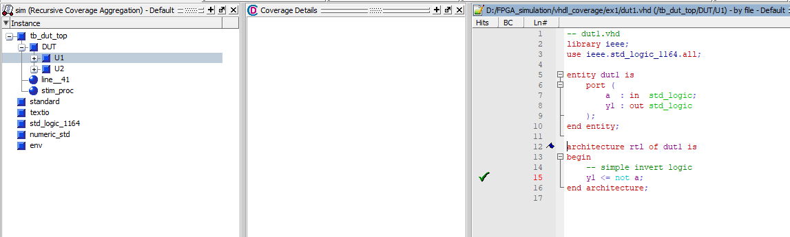
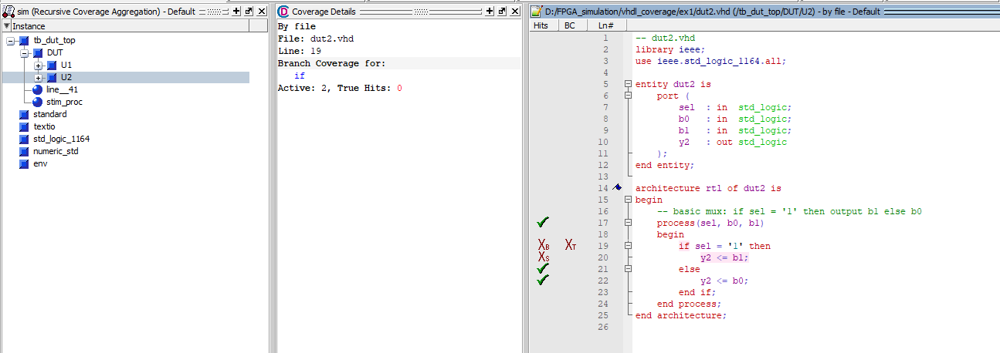
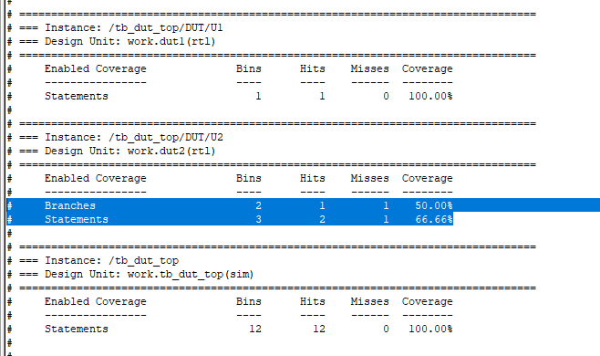
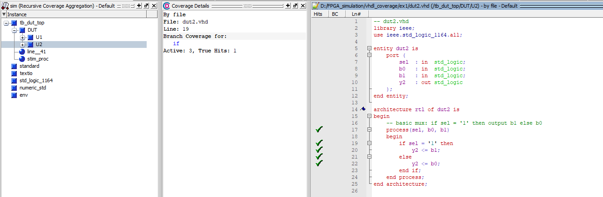
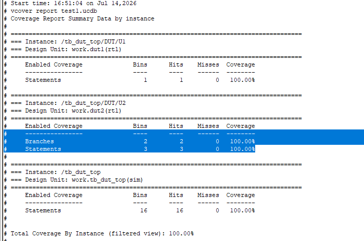
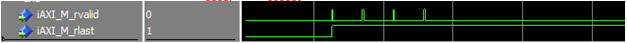

VHDL Code Coverage: การประเมินความครอบคลุมของ Testbench สำหรับงานFPGA Logic
1 Introduction: Why Code Coverage Matters
When developing digital hardware in RTL (VHDL or Verilog), authoring comprehensive Testbenches for RTL Simulation represents one of the most critical and time-intensive phases of the engineering lifecycle.
The Fundamental Verification Question:
This is where Code Coverage becomes indispensable.
Code Coverage is an objective, quantitative simulation metric that instruments and records whether each line of RTL, branch decision (if / case), Boolean term, and signal toggle was exercised during verification. It serves as a navigational map exposing dead code and blind spots in test stimuli.
2 Taxonomy of Code Coverage Metrics
Industry-standard FPGA simulators (including Siemens QuestaSim / ModelSim, Vivado Simulator, and Aldec Active-HDL) instrument verification using four core structural metrics:
| Coverage | Definition | Summary |
|---|---|---|
| Xs (Statements) | Verifies whether each RTL executable statement has been visited at least once. | Statement Executed |
| Xb (Branches) | Verifies that every feasible branch of if-else and case statements (True and False paths) has been taken. |
Both True & False Taken |
| Xc (Conditions) | Verifies that each individual Boolean term in a compound logical expression has transitioned to both True and False independently. |
Each Term Toggled 0 and 1 |
| Xt (Expression True/False) | Verifies whether the overall composite expression has evaluated to both True and False at the macro level. |
Expression Evaluated 0 and 1 |
Key Distinction: Condition Coverage (Xc) vs. Expression Coverage (Xt)
Example Scenario: Consider the compound condition if (A and B and C and D):
- Condition Coverage (Xc): To achieve 100% coverage, a minimum of 5 test cases is mathematically required so that each sub-variable (A, B, C, D) is stimulated in both
0and1states without being masked by adjacent terms. - Expression Coverage (Xt): Requires only 2 test cases: simply ensuring that the overall boolean expression has resolved to both False (
0) and True (1).
Truth Table Requirements for Condition Coverage (Xc):
| Test case | A | B | C | D | A AND B AND C AND D |
|---|---|---|---|---|---|
| 1 | 0 | 0 | 0 | 0 | 0 |
| 2 | 1 | 0 | 0 | 0 | 0 |
| 3 | 0 | 1 | 0 | 0 | 0 |
| 4 | 0 | 0 | 1 | 0 | 0 |
| 5 | 0 | 0 | 0 | 1 | 0 |
Truth Table Requirements for Expression Coverage (Xt):
| Test case | A | B | C | D | Expression |
|---|---|---|---|---|---|
| 1 | 0 | 0 | 0 | 0 | False |
| 2 | 1 | 1 | 1 | 1 | True |
3 Practical Walkthrough: dut_top (Inverter + Multiplexer)
To demonstrate these metrics in practice, consider the design under test dut_top composed of two submodules:
dut1: Inverter (negates input signal A)dut2: 2-to-1 Multiplexer (selects between B0 and B1 based on Sel)
3.1 RTL Source Code
Top-Level Entity: dut_top.vhd
-- dut_top.vhd
library ieee;
use ieee.std_logic_1164.all;
entity dut_top is
port (
clk : in std_logic;
rst : in std_logic;
in_a : in std_logic;
sel : in std_logic;
in_b0 : in std_logic;
in_b1 : in std_logic;
out1 : out std_logic;
out2 : out std_logic
);
end entity;
architecture rtl of dut_top is
component dut1
port(
a : in std_logic;
y1 : out std_logic
);
end component;
component dut2
port(
sel : in std_logic;
b0 : in std_logic;
b1 : in std_logic;
y2 : out std_logic
);
end component;
begin
-- โมดูล 1: Inverter
U1: dut1
port map (
a => in_a,
y1 => out1
);
-- โมดูล 2: 2-to-1 MUX
U2: dut2
port map (
sel => sel,
b0 => in_b0,
b1 => in_b1,
y2 => out2
);
end architecture;Inverter Submodule: dut1.vhd
-- dut1.vhd
library ieee;
use ieee.std_logic_1164.all;
entity dut1 is
port (
a : in std_logic;
y1 : out std_logic
);
end entity;
architecture rtl of dut1 is
begin
-- Simple invert logic (Concurrent Assignment)
y1 <= not a;
end architecture;Multiplexer Submodule: dut2.vhd
-- dut2.vhd
library ieee;
use ieee.std_logic_1164.all;
entity dut2 is
port (
sel : in std_logic;
b0 : in std_logic;
b1 : in std_logic;
y2 : out std_logic
);
end entity;
architecture rtl of dut2 is
begin
-- Basic 2-to-1 MUX: if sel = '1' then output b1 else b0
process(sel, b0, b1)
begin
if sel = '1' then
y2 <= b1;
else
y2 <= b0;
end if;
end process;
end architecture;3.2 Initial Testbench Run (Incomplete Stimulus)
We construct tb_dut_top.vhd with deliberately incomplete stimuli, omitting the case where sel = '1' (stimulating only sel = '0' and in_a = '0'):
-- tb_dut_top.vhd
library ieee;
use ieee.std_logic_1164.all;
use ieee.numeric_std.all;
use std.env.all; -- สำหรับคำสั่ง std.env.stop เพื่อหยุดการจำลองอย่างสมบูรณ์
entity tb_dut_top is
end entity;
architecture sim of tb_dut_top is
signal clk : std_logic := '0';
signal rst : std_logic := '1';
signal in_a : std_logic := '0';
signal sel : std_logic := '0';
signal in_b0 : std_logic := '0';
signal in_b1 : std_logic := '0';
signal out1 : std_logic;
signal out2 : std_logic;
begin
-- Instantiate Design Under Test (DUT)
DUT: entity work.dut_top
port map (
clk => clk,
rst => rst,
in_a => in_a,
sel => sel,
in_b0 => in_b0,
in_b1 => in_b1,
out1 => out1,
out2 => out2
);
clk <= not clk after 5 ns;
-- Stimulus Process
stim_proc: process
begin
rst <= '1';
wait for 10 ns;
rst <= '0';
-- ทดสอบ Inverter: ส่งแค่ '0' (ยังไม่ได้ส่ง '1')
in_a <= '0'; wait for 10 ns;
-- in_a <= '1'; wait for 10 ns;
-- ทดสอบ MUX: ส่งแค่ sel = '0'
sel <= '0'; in_b0 <= '0'; in_b1 <= '1'; wait for 10 ns;
-- จบการจำลองอย่างเป็นทางการ
std.env.stop;
end process;
end architecture;3.2.1 Coverage Analysis: Run 1
-
Module
U1(dut1.vhd):
- The statement
y1 <= not a;is a concurrent signal assignment executed continuously from simulation time t = 0, thus registering 100% Statement Coverage.
Note on Toggle Coverage in dut1Although Statement Coverage for
dut1registers 100%, inspecting Toggle Coverage reveals that signalsin_aandy1fail to hit 100%. Neither signal has toggled through both transitions (0 → 1 and 1 → 0) because the testbench only drovein_a <= '0'. - The statement
-
Module
U2(dut2.vhd):
Red highlight flags annotate the unexecuted lines inside
if sel = '1' then y2 <= b1;:Xs(Missed Statement): Liney2 <= b1;was never executed.Xb(Missed Branch): Thesel = '1'branch path was never traversed.Xt(Missed Expression True): Expressionsel = '1'never evaluated to True.
-
Coverage Summary Report:

- The aggregate report confirms Statement and Branch coverage remain incomplete due to the missing
sel = '1'stimulus.
- The aggregate report confirms Statement and Branch coverage remain incomplete due to the missing
3.3 Refined Testbench Run 2 (Achieving 100% Coverage)
We enhance the testbench stimulus process by supplying vectors for both in_a = '1' and sel = '1':
-- stimulus process ที่ปรับปรุงแล้ว
stim_proc: process
begin
rst <= '1';
wait for 10 ns;
rst <= '0';
-- ครอบคลุม Inverter
in_a <= '0'; wait for 10 ns;
in_a <= '1'; wait for 10 ns;
-- ครอบคลุม MUX ทั้งกรณี sel = '0' และ sel = '1'
sel <= '0'; in_b0 <= '0'; in_b1 <= '1'; wait for 10 ns;
sel <= '1'; in_b0 <= '0'; in_b1 <= '1'; wait for 10 ns; -- << เพิ่มบรรทัดนี้
std.env.stop;
end process;3.3.1 Results After Refinement:


- All
Xs,Xb, andXtflags are eliminated. - Coverage Summary hits 100% across all structural categories.
4 Case Study: 100% Branch Coverage but Incomplete Condition Coverage
Consider an actual production bus interface: logic monitoring an AXI Read Data channel to push incoming words into an internal FIFO only when data is valid and marks the last transfer of a burst transaction (rlast):
- Single Transfer: A standalone 1-word transfer where
rlastasserts immediately alongsidervalid. - Burst Transfer: Streaming consecutive data beats (e.g., a 4-word burst):
- Beats 1, 2, and 3:
rvalid = '1', butrlast = '0'(burst in progress). - Beat 4:
rvalid = '1'andrlast = '1'(final transfer terminating burst).
- Beats 1, 2, and 3:
-- การเขียนควบคุม FIFO จากสัญญาณ AXI Read Data Channel
process(CLK, RST_L)
begin
if (RST_L = '0') then
wpFIFOWr <= '0';
elsif rising_edge(CLK) then
-- เงื่อนไข: ต้องเป็นข้อมูลที่ valid และเป็นข้อมูลคำสุดท้ายของชุด (rlast)
if (iAXI_M_rvalid = '1' and iAXI_M_rlast = '1') then
wpFIFOWr <= '1';
else
wpFIFOWr <= '0';
end if;
end if;
end process;4.1 QuestaSim Focused Expression Coverage Report:
By file
File: ../../RTL/AXI_M_DMA32.vhd
Line: 290
Branch Coverage for:
if
Active: 657, True Hits: 328
---------------------------------------------------------------------
Condition Coverage for:
((iAXI_M_rvalid = '1') and (iAXI_M_rlast = '1'))
FEC Coverage: 1 out of 2 input terms covered = 50.00%
Input Terminal Covered Reason Hint
--------------------- ------- ------------ --------
(iAXI_M_rvalid = '1') Y
(iAXI_M_rlast = '1') N '_0' not hit Hit '_0'
Rows: Hits FEC Target Non-Masking Condition(s)
-------- ----- ----------------------- ------------------------
Row 1: 1 (iAXI_M_rvalid = '1')_0 -
Row 2: 1 (iAXI_M_rvalid = '1')_1 (iAXI_M_rlast = '1')
Row 3: 0 (iAXI_M_rlast = '1')_0 (iAXI_M_rvalid = '1') <-- Uncovered Term!
Row 4: 1 (iAXI_M_rlast = '1')_1 (iAXI_M_rvalid = '1')Analysis: Examining Row 3 in the FEC table:
Row 3: Hits = 0 | FEC Target: (iAXI_M_rlast = '1')_0 | Non-Masking: (iAXI_M_rvalid = '1')This proves the simulator never witnessed a cycle where iAXI_M_rvalid = '1' while iAXI_M_rlast = '0'!
- Waveform Inspection: The waveform confirms that
rlastwas never zero whilervalidwas high—revealing that the testbench only simulated single-beat transfers and completely overlooked burst transactions.

5 Essential Verification Best Practices
5.1 Code Coverage ≠ Functional Correctness
- White-Box Structural Metric: Code Coverage verifies whether written statements were exercised. It cannot judge whether the executed behavior satisfies system specifications.
- Uncovered Omissions: If the RTL designer omitted a necessary state machine transition, incorrectly calculated a formula, or inverted an output polarity, Code Coverage will happily report 100% as long as the flawed lines are visited. Functional Coverage and self-checking assertions (SVA / PSL) are required to verify behavioral intent.
5.2 Recommended Verification Closure Sequence
Systematically close coverage gaps in the following prioritized order:
(ต้องได้ 100% ก่อน เพื่อยืนยันว่าไม่มี Dead Code)"] --> B["2. Branch Coverage
(ตรวจเงื่อนไข if/else, case ให้ครบทุกกิ่ง)"] B --> C["3. Condition / FEC Coverage
(ตรวจสมการตรรกะซับซ้อน ป้องกัน Masking Effect)"] C --> T["4. Toggle Coverage
(เช็คสัญญาณทุกบิตว่าสลับ 0/1 ครบ ไม่มีขาลอย)"] T --> F["5. FSM Coverage
(เช็ค State และ Transition ให้ครบตามแผนผัง)"]
Therefore, the optimal closure pipeline is: Statements → Branches → Conditions / Expressions → Toggles → FSM.
Statement Coverage must be 100% closed first. Any unvisited statement means an entire hardware path is dark. Once statement closure is achieved, engineers can systematically resolve branch paths, boolean conditions, and state transitions.